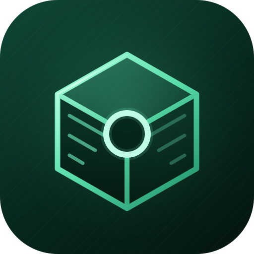

bundlebox
bundlebox cuts what AI coding agents are billed for by answering their orientation questions locally, before the agent opens. It never calls a model.
opening window per agent session, 44.3k to 29.2k tokens
tokens for the same planned findings, 1.3M to 351k
sampleOne questions over source and logs, 32,080 to 869 tokens
01Problem
AI coding agents are billed per token, and most of those tokens go to orientation, not judgement. Before an agent changes a line, it reads files to learn where a symbol lives, which files a task touches, whether two tables agree and what changed since last week. A parser, a count or a set difference answers each of those questions for free. Teams pay model prices for them anyway, on every session and by every developer.
02Proof
| Measurement | Without | With bundlebox | Change |
|---|---|---|---|
| Opening window per agent session, before any work | 44.3k tokens | 29.2k tokens | −34% |
| The same findings, planned | 5 sessions, 1.3M | 2 sessions, 351k | −74% |
| sampleOne: questions over its source and logs | 32,080 tokens | 869 tokens | −97% |
| sampleOne: bugs its 12 green unit tests missed | 0 found | 5 found in 12 s | 0 model tokens |
Measured with bundlebox's own commands (bb session, bb tokens profile --probe). It works with Claude Code, Codex, Gemini CLI and OpenCode. All figures are on code the maintainer wrote, so a third-party benchmark is part of the ask.
03Users
bundlebox is at day zero of adoption. It went public on 2026-09-14 and reached npm on 2026-09-19, with 150 downloads in its first days. It has 2 GitHub stars and no outside teams yet. Plan for the next 90 days:
- Run it on 10 to 20 outside teams' repositories and publish their measured savings.
- Report weekly downloads, stars and opt-in active installs monthly.
- Target teams that already pay a monthly agent bill.
04Business model
The CLI stays free and MIT. Teams pay per seat for a hosted layer:
- A shared ledger of what each session used and saved.
- An org dashboard of agent spend per repo, developer and vendor.
- Budget and policy controls across every agent the team runs.
The price stays below the tokens it measurably saves. It will be set from the first outside teams' savings.
05The ask
| Months | Milestone | Proves |
|---|---|---|
| 1–3 | Windows support, and a public benchmark on third-party repositories | Savings hold on code the maintainer did not write |
| 1–3 | 10 to 20 outside teams running it, with published savings | People adopt it without help |
| 4–8 | Hosted team layer in beta: ledger, dashboard, budget controls | Teams will pay for it |
| 9–12 | First paying teams, and pricing set from their savings | A repeatable way to sell it |
pre-seed for 12 months of full-time work by the maintainer. As a grant, $5,000 funds the months 1–3 milestones.